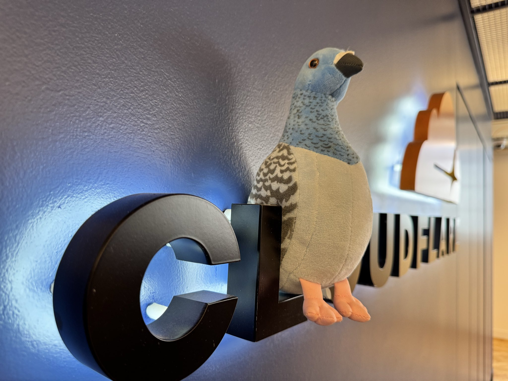
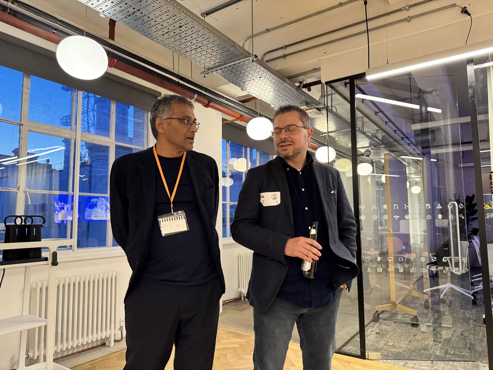

County Hall · first to last · six public notes
Cloudflare
London
Onepage
A compressed field report from the user group: invitation, venue, talks, demo, drinks, river light.
Swarms can drift together. Systems need rails.

01 InviteLondon user group gathers at Cloudflare County Hall.
02 VenueRiver edge, Big Ben, orange letters, evening arrivals.
03 TalkAlpesh Doshi frames agentic systems and their failure modes.
04 DemoYigit Erol maps sandboxes, Zero Trust, and safe execution.
05 RoomOrganizers, builders, questions, post-talk drinks.
06 ImagePrada the pigeon lands the civic punchline.

pigeon agentic
agentic sandbox
sandbox
drinks6
One frame holds the whole meetup arc: public invitation → technical talks → live demo logic → community evidence → closing story.
Cloudflare London User Group · County Hall · MoQ-adjacent infrastructure conversations · credentialed trust as operating principle
Hallucination is social. Verification must be architectural.
Meetup recap
as system map.
as system map.
Closing labelRead the room, trace the chain, keep the agents inside bounded trust.Revisit the thread